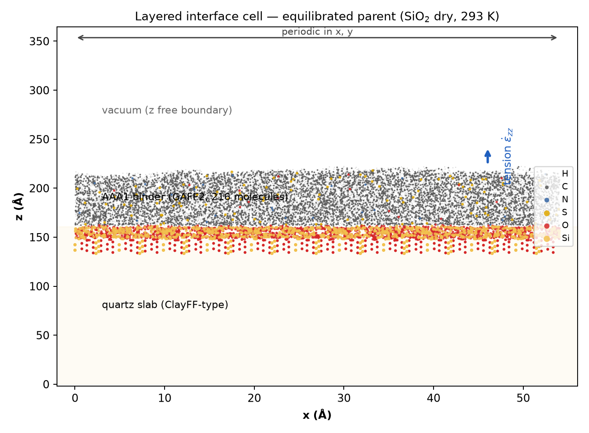

LAMMPS 개요와 설치 · 입력 스크립트 해부 · 데이터 파일과 토폴로지 · 초기 구조와 다층 계면 셀 생성
파이프라인 6단계 중 03 MD 계산의 실행 절차를 확정
8분 · LAMMPS 개요 · GPU/KOKKOS 빌드 · 패키지 구조
이 강좌가 쓰는 범위 — 유기 분자 벌크와 계면 · GAFF2(General AMBER Force Field 2) 계열 힘장 · NVT/NPT 앙상블(ensemble) · 밀도 · CED(cohesive energy density) · 점도 · 부착일(work of adhesion)
sudo apt update sudo apt install -y build-essential cmake git \ python3-dev libopenmpi-dev openmpi-bin \ libfftw3-dev libjpeg-dev libpng-dev
git clone -b stable https://github.com/lammps/lammps.git cd lammps && mkdir build && cd build
cmake -D BUILD_MPI=yes -D BUILD_OMP=yes \ -D PKG_MOLECULE=yes -D PKG_KSPACE=yes \ -D PKG_RIGID=yes -D PKG_EXTRA-DUMP=yes \ -D FFT=FFTW3 -D CMAKE_BUILD_TYPE=Release ../cmake make -j$(nproc) sudo make install # lmp 실행 파일 설치
cd ../bench mpirun -np 4 lmp -in in.lj # 3d LJ melt, 정상 종료 확인
nvidia-smi # Driver Version / CUDA Version nvcc --version # toolkit 설치 여부 sudo apt install -y nvidia-cuda-toolkit # 없을 때
cmake -D BUILD_MPI=yes -D PKG_KOKKOS=yes \ -D Kokkos_ENABLE_CUDA=yes -D Kokkos_ARCH_HOPPER90=on \ -D PKG_MOLECULE=yes -D PKG_KSPACE=yes -D PKG_RIGID=yes \ -D FFT=FFTW3 -D CMAKE_BUILD_TYPE=Release ../cmake make -j$(nproc)
# GPU 1장 · MPI 2랭크 mpirun -np 2 lmp -k on g 1 -sf kk \ -pk kokkos newton on neigh half -in in.run
16분 · units · atom_style · pair_style · fix · run
명령은 위에서 아래로 순차 해석 · 같은 명령 재사용 시 앞의 설정 덮어씀
앞 장 코드의 색 띠 = 이 다섯 칸의 색 · 명령의 소속 구간부터 확인하면 낯선 스크립트도 판독 가능
98304 atoms 68 atom types 99840 bonds 142 bond types 0.0 105.82 xlo xhi 0.0 105.82 ylo yhi 0.0 105.82 zlo zhi Masses / Pair Coeffs / Bond Coeffs Atoms # full : id mol type q x y z Bonds / Angles / Dihedrals
단위계는 스크립트 첫 줄에서 한 번만 결정 — 이후 모든 수치의 의미가 여기에 연동
kspace_style pppm 1.0e-4 kspace_modify mesh 60 60 60 order 5 neighbor 2.0 bin neigh_modify every 1 delay 0 check yes
컷오프 · 정확도 설정은 데이터셋 전체에서 고정 — 값이 다르면 물성 비교가 성립하지 않음
출력 네 종류는 실험 ID 폴더 하나에 함께 보관 — 8주차 데이터 적재는 이 폴더 구조를 그대로 판독
8분 · 원자 좌표 · 토폴로지 · 힘장 파라미터
여기 예시는 메탄 한 분자 · 실제 binderA.data 는 같은 형식이 98304 atoms · 68 atom types 로 확장된 것 — Pair Coeffs · Bond Coeffs 는 include 파일로 분리
계수의 원자 타입 번호는 data 파일의 타입 번호와 정확히 대응 필수 — 어긋나면 경고 없이 틀린 결과 산출
10분 · Packmol · Moltemplate · RDKit · 벌크 셀 구축과 품질 점검
conda create -n md python=3.11 conda activate md conda install -c conda-forge packmol openbabel rdkit
sudo apt install -y gfortran git clone https://github.com/m3g/packmol.git cd packmol && make sudo cp packmol /usr/local/bin/
packmol < example.inp # 표준입력으로 받는다 # 종료 메시지에 "Success!" 가 나와야 정상
from rdkit import Chem
from rdkit.Chem import AllChem
m = Chem.AddHs(Chem.MolFromSmiles("Cc1ccccc1"))
AllChem.EmbedMolecule(m)
AllChem.MMFFOptimizeMolecule(m)
Chem.MolToPDBFile(m, "toluene.pdb")
tolerance 3.0 filetype pdb output binder.pdb seed 20240901 structure asphaltene.pdb number 12 inside box 2. 2. 2. 78. 78. 78. end structure structure resin.pdb number 28 inside box 2. 2. 2. 78. 78. 78. end structure structure saturate.pdb number 40 inside box 2. 2. 2. 78. 78. 78. end structure
계가 작으면 통계 오차 증가, 크면 GPU 시간 증가 · 물성별 최소 크기를 미리 설정
스윕 권장점 ρ = 0.2 g/cm³ · tolerance 3.0 Å · maxit 200 — 첫 시도 92%, 3회 재시도로 약 99.9%
8분 · 부착 · 계면 연구를 위한 다층 시스템

부착일 계산과 수분 조건 비교는 6주차 보충 — 여기서는 셀 생성까지